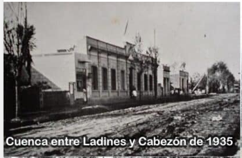
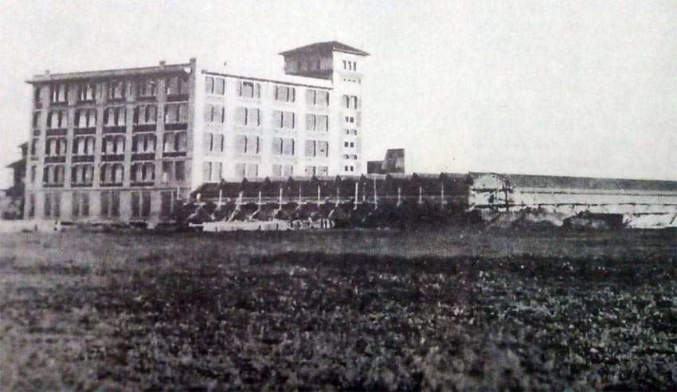

El nombre proviene de una estación del entonces Ferrocarril Central Argentino, (hoy F. C. Gral. Mitre), que se llamaba «Km. 14» y que en 1907, recibió el nombre de «Pueyrredón», en homenaje al prócer Brigadier Gral. Juan Martín de Pueyrredón. Como en otros casos de barrios de la ciudad, fue el tráfico del ferrocarril, lo que da origen al bautismo del lugar que pasó a llamarse «Villa Pueyrredón».
Habitaron en este barrio una gran cantidad de familias europeas que habían venido a trabajar en el «gran proyecto ferroviario», el más importante de Latinoamérica, y de esa forma también le dieron a las construcciones una fisonomía muy particular. Sus calles de tierra con zanjas profundas comenzaron a poblarse de casas precarias. Más tarde esas calles fueron adoquinadas. La casa más importante se construyó en el siglo pasado en la calle Tequendama y perteneció a la familia Bottaro.
 El clima que se vivía en esta zona era totalmente rural, pero esta tranquilidad campestre que se gozaba en el lugar se alteraba con cantidad de vendedores ambulantes que ofrecían sus mercancías en voz muy alta, lecheros, paveros, corderos, quesos, verduras, frutas, pollos, etc. Las Grandes Fábricas Argentinas (GRAFA), industria textil, se establecieron en 1926 en el barrio de Villa Pueyrredón. Grafa dió grandes beneficios al barrio de Villa Urquiza, Villa Pueyrredón y zonas aledañas, recordando aún hoy, muchos vecinos, la sirena que anunciaba los cambios de turno del personal y que según soplara el viento se escuchaba hasta la localidad de San Martín. Con la debacle económica de los 70 y la llegada en los 90 del gobierno de Carlos Saúl Menen, luego de tantos años de historia, GRAFA, la compañía textil que funcionaba desde 1930 y que históricamente se especializó en confección de ropa de trabajo, fue adquirida por la brasileña Santista e ingresó al negocio de la moda. La fábrica fue demolida en 1994.